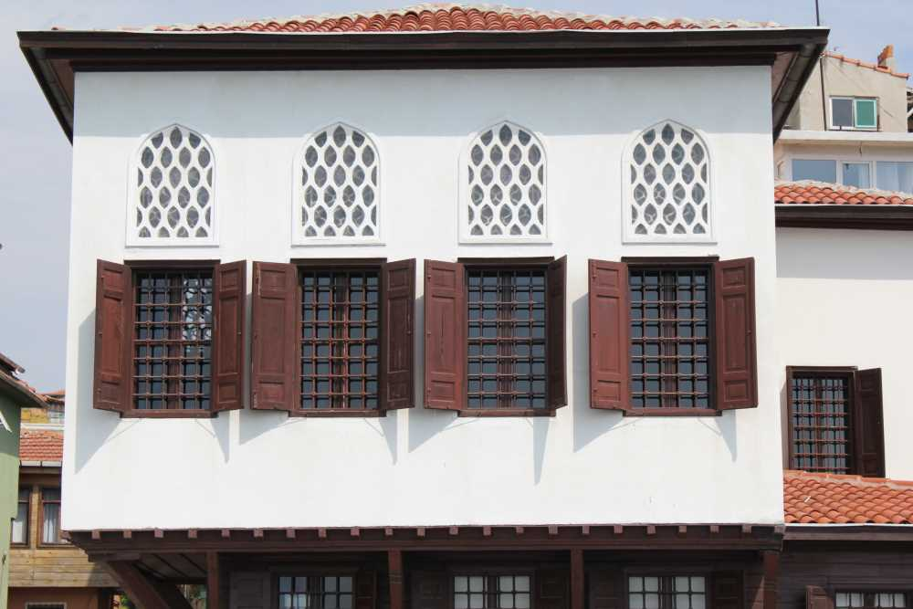
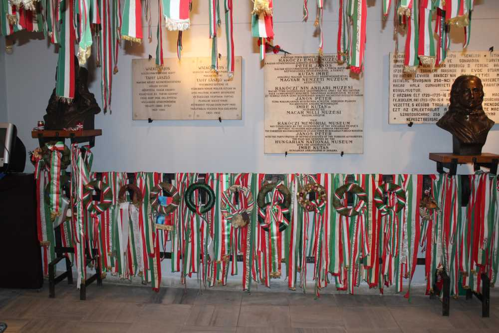
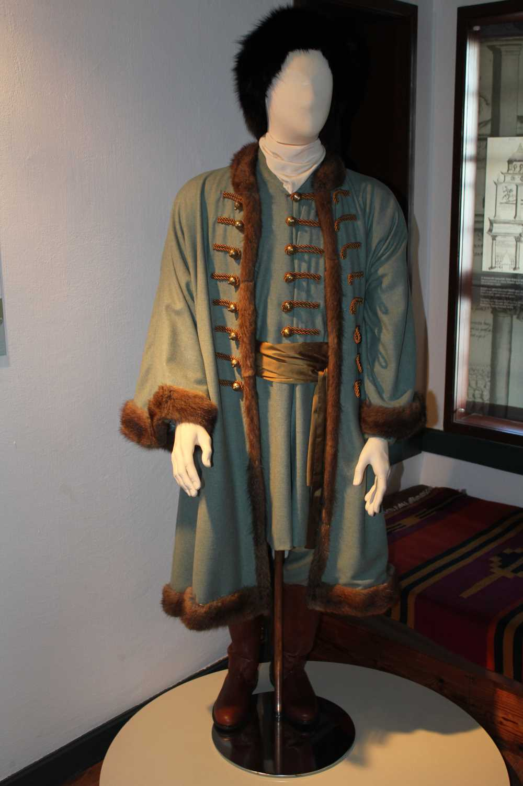
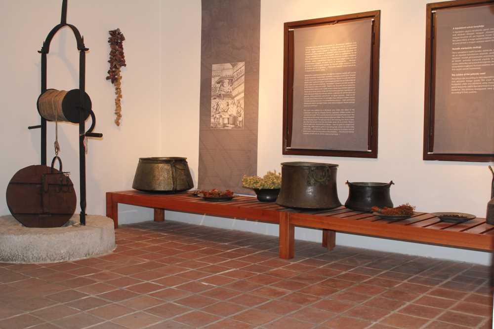

Rakoczi Müzesi Hakkında Genel ve Tarihi Bilgiler
Barbaros Caddesi üzerinde eski bir Türk evi olan bina 1676-1735 yılları arasında yaşayıp, son yıllarını Tekirdağ’da geçiren Erdel Prensi ve Macar Halk Kurtuluş Kahramanı II. Rakoczi Frençh’in anılarına izafeten Macar Hükümeti tarafından müze olarak düzenlenmiştir. Mülkiyeti ve içindeki zati eşyalarıyla birlikte Macar Hükümeti'ne ait olan müze 25 Eylül 1982 tarihinde ziyarete açılmıştır. Sergilenen eserler arasında Türk-Macar ilişkilerini ve iki ulusun halk sanatlarındaki beraberliklerini simgeleyen eserler ile Rakoczi’nin şahsi ve ailesine ait eşyalar yer almaktadır.Adres Bilgileri
Adres: Ertuğrul Mah.Barbaros Cad. Hikmet Çevik Sokak No:21 TEKİRDAĞ
Açılış-Kapanış Saatleri: 09.00-12.00 / 13.00-17.00 Pazartesi hariç her gün açık ve fotoğraf çekmek yasaktır.
Giriş Ücreti: Yetişkinler için 25 TL çocuklar,öğrenciler ve 65 yaş üstü ziyaretçiler için ise 15 TL'dir
İletişim Bilgileri
TEKİRDAĞ Tel: (0.282) 263 85 77 numarasından ulaşım sağlayabilirsiniz
Rakoczi Müzesi ile İlgili Bazı Fotoğraflar
   
Detayli Bilgi
Detaylı Bilgi ve daha fazla fotoğraf için "Türkiye Kültür Portalı" web sayafasına buradan ulaşabilirsiniz.
Sayfama ait bilgiler ve resimler de Türkiye Kültür Portalı web sayfasına aittir.